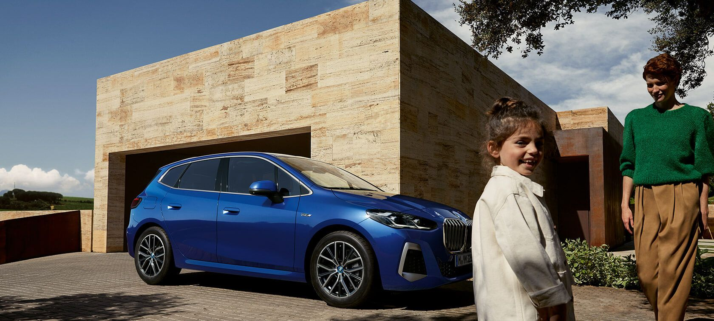
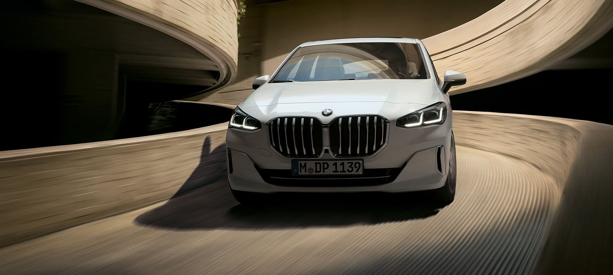
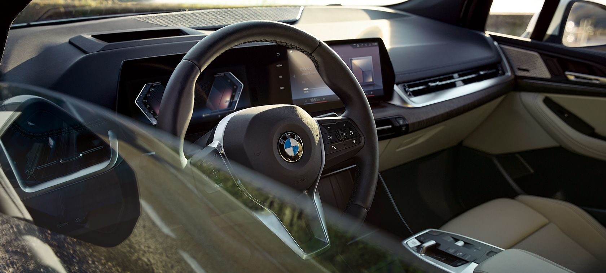

|  | ||||
| Motor ve Yakıt Tipi | Güç | 0-100KM | ||
| BENZİN | 170 bg | h:8.1 sn | ||
BMW 2 Serisi Active Tourer, yüksek kalitedeki standart donanımı ve 170 bg'ye varan* mild hybrid motor gücü ile BMW'nin eşsiz sürüş keyfini vadediyor. 1405 litreye kadar bagaj hacmi ve verimli hareketli aksam ünitesinin yanı sıra modern tasarımı ve muhteşem konforuyla aktif bir yaşam tarzına sahip kişiler için ideal bir otomobil olarak öne çıkıyor. |
|
BMW 2 Active Tourer :
|
|
BMW 2 SERİSİ ACTIVE TOURER'IN ÖNE ÇIKAN DIŞ TASARIM ÖZELLİKLERİ. |
|
Sekizgen biçimindeki geniş çiftli Böbrek Izgaraları ile BMW 2 Serisi Active Tourer'ın atletik duruşlu tasarımı, oldukça ayırt edici ve kendinden emin bir izlenim yaratıyor. Gövdeye sıfır şekilde entegre edilen kapı kolları otomobilin yalın tasarımını öne çıkarıyor. Diğer yandan, düz A sütunu ve keskin çizgilerle birlikte uzatılmış yan cam grafiği otomobilin silüetine dinamik bir biçim kazandırıyor. |

|
BMW 2 SERİSİ ACTIVE TOURER’IN YENİ İÇ TASARIMI. |
|
BMW 2 Serisi Active Tourer'ın iç tasarımı, ilerici tasarım stili ve sunduğu geniş alan ile öne çıkıyor. İdeal şekilde konumlandırılan saklama seçenekleri, opsiyonel spor ön koltuklar ve standart olarak sunulan arka koltuk ayarı otomobilin arka bölümünde çok yönlü kullanıma ve daha fazla konfora olanak tanıyor. |
